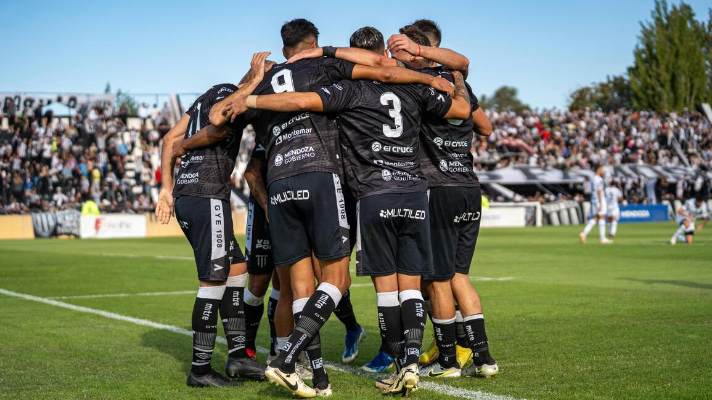

Santos Pedra Mole
O Santos Pedra Mole nasceu da vontade de um grupo de amigos apaixonados por futebol. Mais do que um time, somos uma comunidade que respira o esporte, valoriza a amizade e transforma cada partida em uma celebração. Inspirados na tradição do futebol brasileiro, levamos nossa camisa com orgulho e respeito em cada campo que pisamos.
